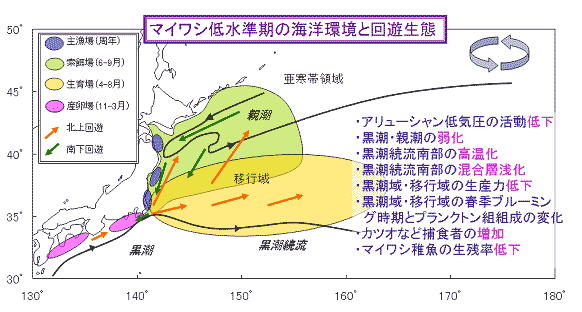

|
２）マイワシ太平洋系群の低水準期の生態構造 １９８８年以降の資源が低水準期にあるマイワシの海洋環境と回遊生態を示しています。１９８８年以降は、高水準期とは逆に、アリューシャン低気圧の活動が弱く、親潮の南下や黒潮の流れが弱まり、黒潮続流南部の水温が高温傾向になります。このような状況下では、親潮南下の弱まりや黒潮続流南部における混合層の浅化により稚魚の成育場である移行域のプランクトンの発生が少なくなり（プランクトン組成の変化により稚魚の発育段階に応じた適当な大きさのプランクトンが供給されないとも考えられます。）、成育に適した水域面積が大きく縮小します。また、黒潮続流南部の水温の上昇傾向によって稚魚期の捕食者であるカツオ・ビンナガ等暖海性大型回遊魚の北上を促し、これら外敵との遭遇機会も増加するとも考えられます。これらのことからマイワシ稚魚は稚魚期から幼魚期にかけて生き残りが極めて悪くなったと考えられます。さらに、１９９０年代にはカツオ・ビンナガ資源が増加している状況も影響があると考えられます。 このような生態構造は、資源の低水準期においても、年によって多かれ少なかれ変動が生じていると考えられます。
 [前ページ] [次ページ] [1] [2] [3] [4] [5] [6] [7] [8] [9] [10] [11] [12] [13] 14 [15] [16] [17] |